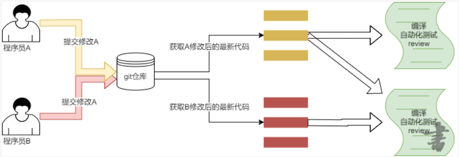

5.2 简单的持续集成
学习目标：
- 了解 持续集成的概念
1. 持续集成的概念
持续集成是一种软件开发实践，即团队开发成员经常集成他们的工作，通常每个成员每天至少集成一次，也就意味着每天可能会发生多次集成。每次集成都通过自动化的构建（包括编译，发布，自动化测试）来验证，从而尽早地发现集成错误。
2. 多人协作开发

3. 如何触发编译
在git仓库目录内的hooks子目录中存放着钩子脚本
run@LAPTOP-ESLO4FOJ:~/go_project/hello_web/.git/hooks$ pwd
/home/run/go_project/hello_web/.git/hooks
run@LAPTOP-ESLO4FOJ:~/go_project/hello_web/.git/hooks$ ls
applypatch-msg.sample pre-applypatch.sample pre-push.sample
commit-msg.sample pre-commit.sample pre-rebase.sample
post-update.sample prepare-commit-msg.sample update.sample
钩子脚本会在对应的事件发生时由git自动执行，缺省情况下所有脚本都不执行
文件名称.sample代表该文件仅作为实例，去掉.sample后才能被执行
git仓库在收到git push请求后会执行post-receive，并将本次push的commit号范围（最新commit号 和上一次commit号），分支名称等信息输入给该脚本。若执行失败则会将失败的提示信息返回给提交代码的人
4. 怎样获取最新代码
编译代码时不需要修改代码提交代码等操作，所以只需要纯净的代码即可
git archive 用于下载纯净代码包
格式：git archive --remote="远程或本地仓库路径" --fomat="tar或zip" -o "下载后代码包的名称" "分支名"
5. 需求分析
- 编写脚本实现获取最新代码并编译
- 在post-receive中调用该脚本